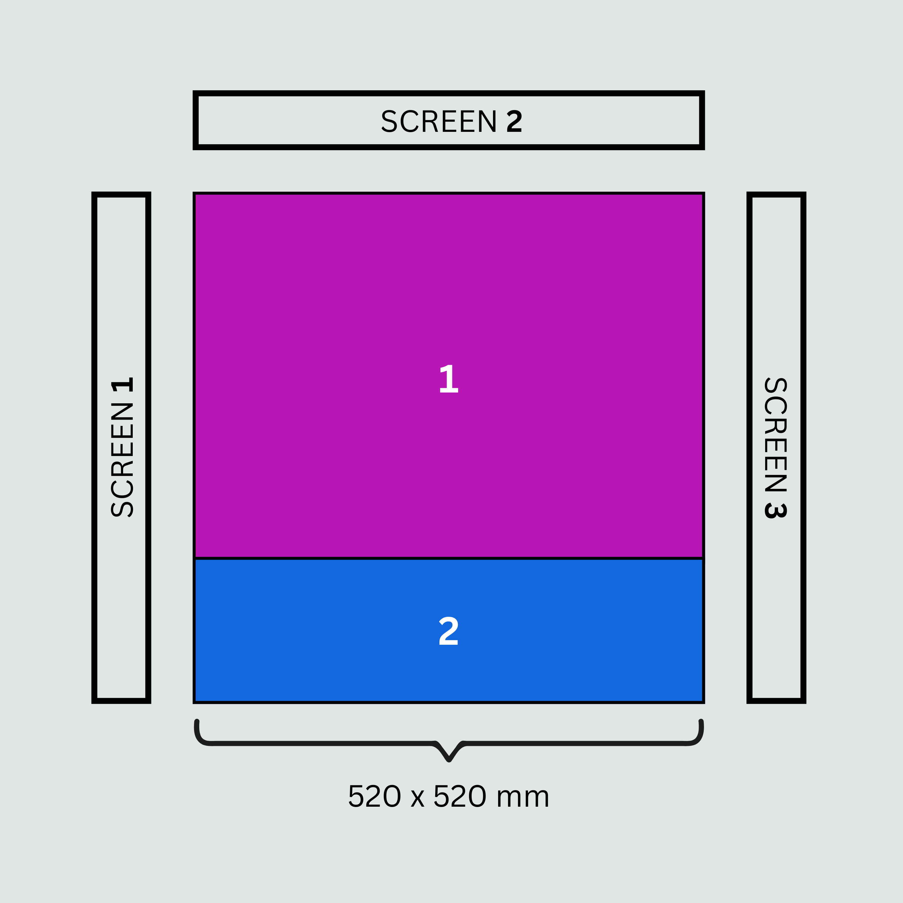
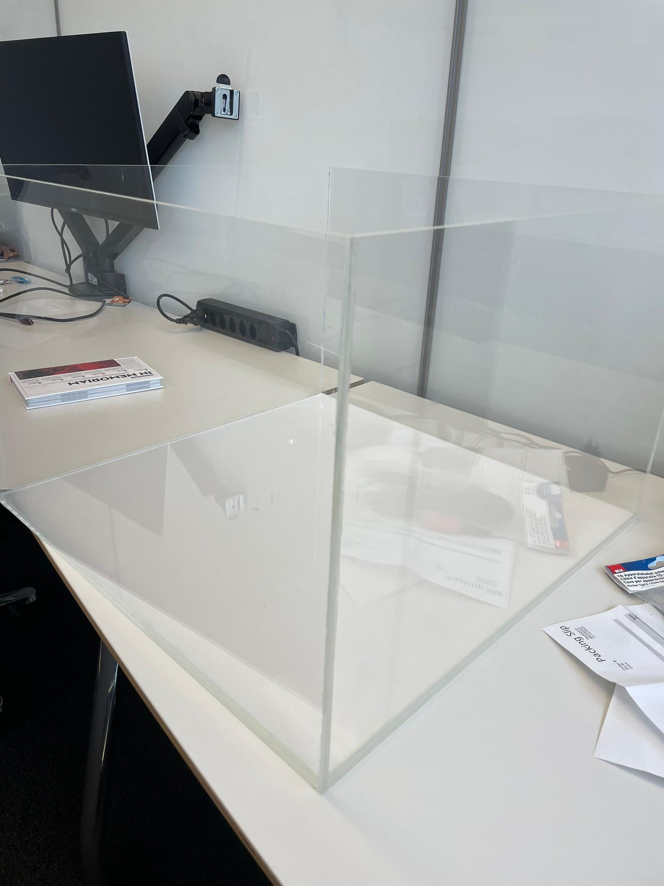
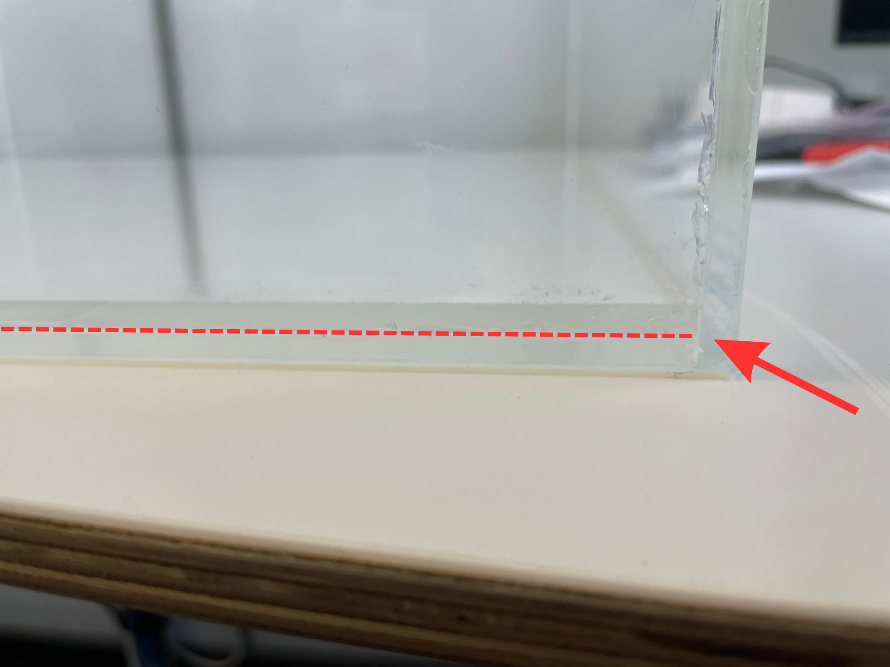

Perspex box for housing the mouse#
The mice are placed within a perspex box, which has transparent sides so that the mouse can view the computer monitors that surround it. The floor of this box consists of two layers of perspex with a sheet of light diffuser sandwiched between them. This provides strong illumination of the mouse for tracking with DLC.
To build the box you will need#
4 x PMMA (transparent perspex) side pieces (525 x 360 x 5 mm)
2 x PMMA (transparent perspex) floor pieces (520 x 520 x 5 mm)
1 x anti-glare adhesive
1 x light diffuser sheet
Assembly#
Once dry glue each of the side pieces pieces onto one of the floor pieces and onto each other. Wait till glue is dry and use heavy objects to ensure that the pieces are pushed against each other while the glue is drying.
Coat one of the floor pieces with the anti-glare adhesive ensuring that there are no air bubbles. The sheet is slightly smaller than the floor plate so you will need to add on another small part of sheet near the back of the floor plate. Reports from the Tolias lab suggest that this seam does not impact the performance of the mice.
{kind=link}

Fig. 1 The front of the floor plate (i.e. closest to SCREEN 2, the main screen) should have the larger anti-glare material patch (i.e. patch 1) and the back of the floor plate should have the smaller one (i.e. patch 2).#
Once fully coated you can place this floor plate inside the box. This floor plate can then be removed between sessions for cleaning.
If you have a machine shop it is recommended to ask them to do this for you, so that this is done with the highest quality!
Image of the box:
{kind=link}

Image of the light diffuser sheet in between the two floor plates:
{kind=link}
